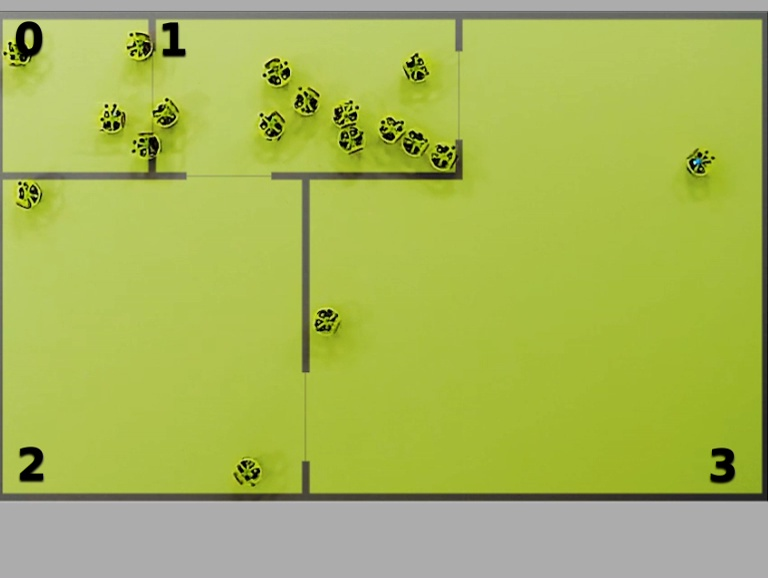
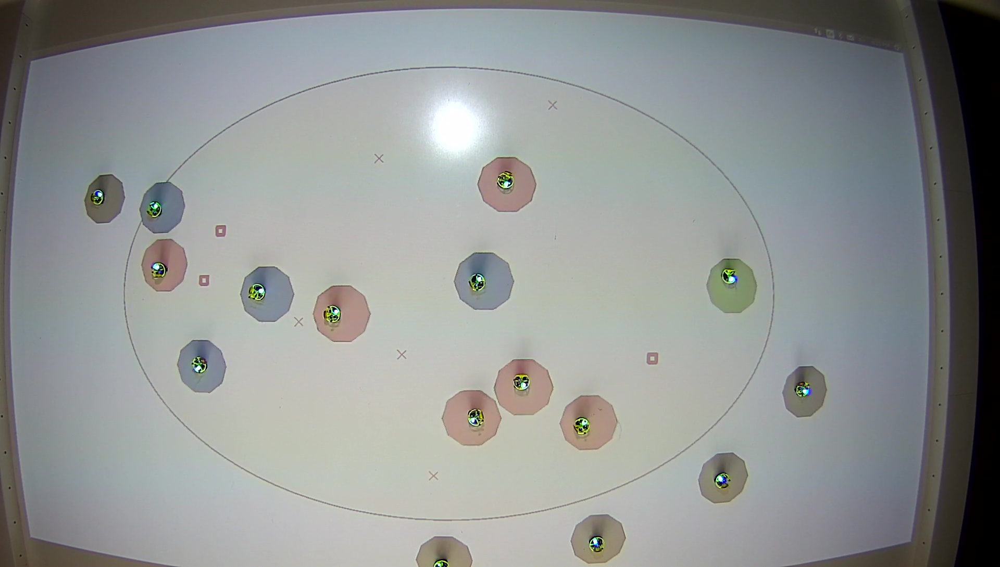
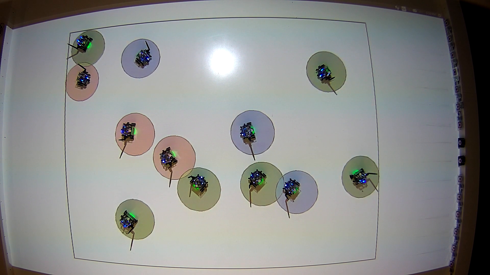
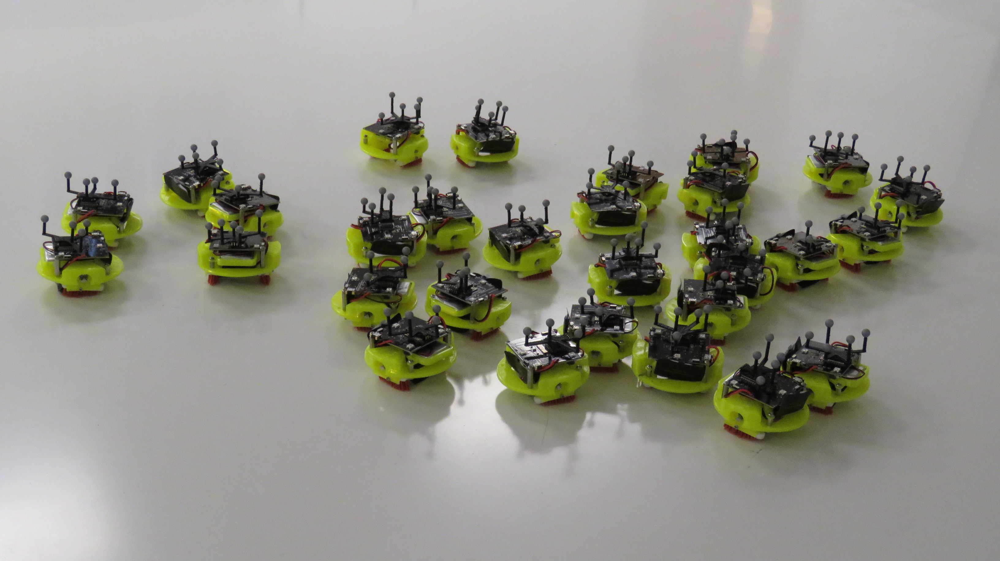
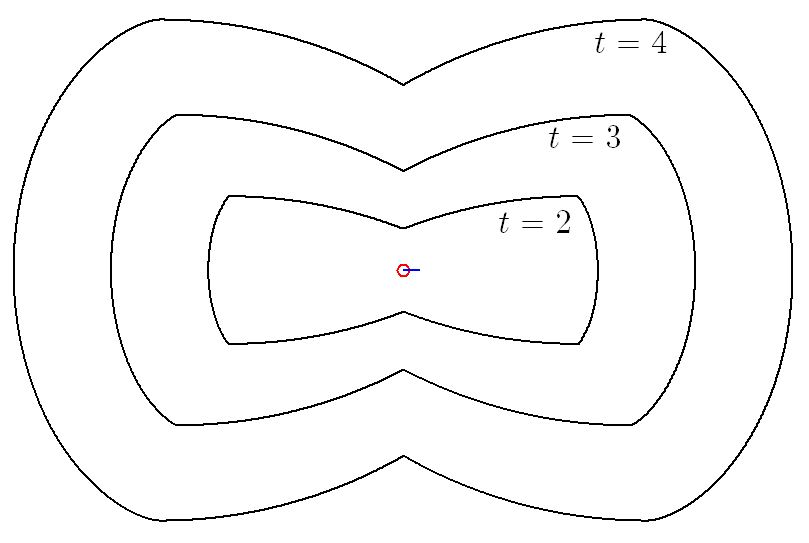

## Inter-Robot Collisions as Information Sources

## Decentralized Interference Reduction in Robot Swarms

## Task Allocation In Multi Robot Systems

## Swarming Brushbots

## Safe Open-Loop Control in Multi-robot systems
